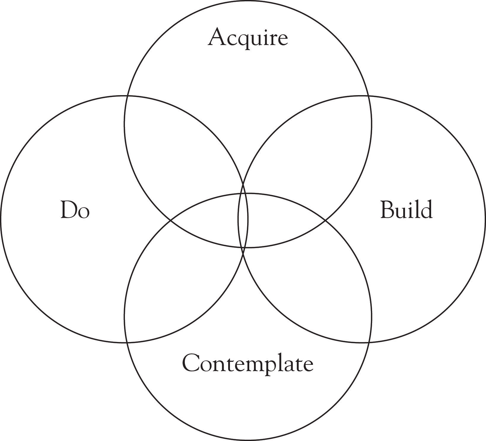

A few years ago I was invited to speak about cultural intelligence at a global women’s leadership conference in the United Arab Emirates. Like any country I am traveling to, I made the efforts to learn about the area of the world that I was going to visit. To prepare for my trip I found books that spoke about the cultural history and background of the country. I bought language CDs and watched documentaries about that region of the world. I also visited websites and blogs to explore what other travelers had done and experienced. I know I spent hours finding information and learning about the culture and the people including what gestures to use and how to address someone in a business meeting–all the etiquettes I thought I would need in the country.
As a petite-sized woman traveling alone, late at night in an unfamiliar country, I was anxious to get to my hotel as soon as possible. Upon my arrival in the United Arab Emirates, I went through passport control like every passenger. When it was my turn, I handed my passport and plane ticket to the man behind the counter. He nodded at me and I responded with an enthusiastic “Hello.” Then, the man looked at me for a few seconds and then looked away. In the seconds that he looked away, I looked toward the direction he was facing. I was not sure what drew his attention away, but his attention never came back to me and my passport.
I did not know what to do. Several thoughts were going through my head at that time. Perhaps I was in the wrong line? Did I do something wrong? Why is he not taking my passport? Was I supposed to get another form of documentation? Could something happen to me? Would I be able to call my peers at their hotel to let them know I arrived? Would someone be willing to come and pick me up?
I was the last person in my line going through passport control, and every line other than my own seemed to be moving. As I watched traveler after traveler go through passport control, I remember feeling very self-conscious and a bit worried. As I watched his attention focused on something else, I tried to draw it back by saying, “Hi!” hoping I would have his attention this time. No luck.
I felt my anxiety rising, mostly because of the worse-case scenario thinking I was doing. I kept telling myself “everything is going to be okay” although I had no idea if it was. I was not clear why the man in front of me was not taking my passport. I looked around for the non-verbal cues, but all I could tell was that he was acting as if he did not see me. Then, I thought I would check to see if there was something wrong with my passport, and I proceeded to say, “Is anything wrong?” No response.
I nudged the passport forward, and he turned his attention back on me. He still did not pick up the passport or acknowledge me. I began to shift the backpack I was carrying on my right shoulder to move the weight off, and then it dawned on me that maybe I should pass the passport to him with my right hand. I had read in the literature and online that in the Arab world, the left hand is considered unclean. Did I hand him the passport with my left hand? I may have since my right hand was grabbing the handles of my backpack.
I nudged the passport with my right hand toward him.
The Emirati responded by taking the passport! He stamped it and then said, “Have a good stay in our country.”
When I reached my hotel, I could not go to sleep. My mind was replaying the scenario of the Emirati man and myself. How did I know what to do? What if I nudged the passport with my right hand and he still did not take it? What emotions were coming up for me? What more could I have done to understand the situation? Was this really a part of Muslim culture I was experiencing or was it the Emirati man’s individual preferences and culture?
I will never forget this experience because it was my own cultural intelligence in action. I was trying to be culturally intelligent without having all the information and knowing only the details that were in front of me. The frustration of not knowing if what I said or did was offensive bothered me because I see myself as adaptable and respectful. And perhaps the man’s reaction had nothing to do with me and all to do with how he was feeling in that moment. Although I sought to learn different parts about the culture before traveling to the Emirates, I gained from this experience the knowledge that one can never be prepared for what cultural interactions could bring in any given moment. This is why cultural intelligence is incredibly vital and useful as a tool; it is there to help you understand each play-by-play action in cultural interactions. CI helps you to break down your cognitive, emotional, and physical reactions, helping you to understand more about yourself so that in future interactions, you make different choices in how you react.
At the core of it, cultural intelligence is your ability to successfully adapt to unfamiliar cultural settings. Peter Earley and Elaine Mosakowski defined cultural intelligence (CI) as the ability to “tease out of a person’s or group’s behavior those features that would be true of all people and all groups, those peculiar to this person or this group, and those that are neither universal nor idiosyncratic.”Earley & Mosakowski (2004), p. 140. Earley et al. wrote that cultural intelligence is not just about learning new cultural situations; it is creating “a new framework for understanding what he or she experiences and sees.”Earley, Ang, & Tan (2006), p. 6. Similarly, David Thomas and Kerr Inkson indicated that cultural intelligence is about
being skilled and flexible about understanding a culture, learning more about it from your on-going interactions with it, and gradually reshaping your thinking to be more sympathetic to the culture and your behaviors to be more skilled and appropriate when interacting with others from the culture.Thomas & Inkson, (2003), p. 14.
The idea of cultural intelligence is an immensely useful tool in business. It helps to bring attention to the differences in thought and behaviors due to cultural factors. Consistently practicing cultural intelligence has been known to increase the success of multicultural team performance. Leaders who are culturally intelligent have awareness of how culture contributes to communication and creates shared learning.Darlington (1996), p. 53.
On a business trip to Texas, my colleague, who had never visited the state, was surprised at the amount of “Spanish music” on the radio. Every time she found a music station or station providing information, the speakers and singers spoke in Spanish. She said, “I can’t find any music that I can understand,” and quickly changed to a local station that played top 40 and pop music.
When I suggested that we should try listening to different music and experience the cultural shift between our state and another, she said, “No way. I can’t understand what they’re saying!” I replied, “I can’t either, but it’s a part of the culture here and wouldn’t it be interesting to be like one of the locals?” Her response, “That’s okay. I’ll just stick to what I know.”
Cultural intelligence is like tuning into different stations, being able to adapt to one’s new environment, and, in this case, to the style of music in this region of the United States. Like my colleague, we all have particular stations that we like. Music that is familiar provides us with comfort. Tuning in to the same stations over and over again breeds familiarity with the songs and the types of programming broadcast by the stations. We even program the stations into our car radio so as to know exactly what buttons to push if we want to hear a specific music genre.
When you are in a different city or state, you begin to lose the signals of your favorite stations. Try as you might, the stations often do not come through. What might you do? You could find another station in that state that offers the same music or information that you like. Upon finding it, you might program it so as to not lose the station. However, what if the radio frequencies you encounter pick up limited stations? Like my colleague, you might turn off the radio or change the station back to one that is familiar. Or, like her, you could bring your own MP3 player with your own music.
Similarly, when you are in unfamiliar cultural settings, you realize that the signals you are receiving are vastly different from your own. You are not familiar with what your new surroundings are communicating to you. Your first reaction is to find something familiar, and you look for cues and signs to help you adjust. However, you cannot always rely on what you know and what you can bring with you. Like my co-worker, bringing equipment, like an MP3 player, does not always guarantee successful integration. After many tries, she found out her MP3 player did not work in the rental car; she opted for turning off the radio altogether. In intercultural interactions, the equipment—that is, our skill sets and our knowledge—may not be enough to cope in a new cultural environment. We need to be able to learn how to turn off or reset ourselves to better adapt to the new situation.
Cultural intelligence is a framework to help you learn to turn off your “cruise control.” Like a computer that has been on too long, is working too hard, or has too many programs running that cause it to freeze, we have to learn to reset our mental programming. Sometimes, resetting it once or twice does not work; you will need to turn it off completely by taking a pause and then returning to it at a later time.
Cultural intelligence emphasizes three areas: metacognition and cognition, motivation, and behavior. Metacognition and cognition represent your ability to think, learn, and strategize. In CI, the principle of motivation refers to your self-efficacy and confidence, your ability to be persistent, and the alignment to your personal values. Behavior, in CI, is about your ability to have a repertoire of skills and your ability to adapt your behavior.
The framework for cultural intelligenceA research-based model of intelligence that can be used to help leaders work through intercultural dilemmas and create understanding and awareness across and between cultures. It consists of four parts: knowledge, strategic thinking, motivation, and behaviors. consists of the following parts: knowledge, strategic thinking, motivation, and behaviors. It may be helpful to think about these as the ABCs of CIAcquire, Build, Contemplate, and Do.: Acquire, Build, Contemplate, and Do.
Figure 3.1 Cultural Intelligence Model
A fundamental piece of inter- and cross-cultural interactions is the knowledge a leader has when working with cultures unfamiliar and different from his or her own. Knowledge is a central tenet in intercultural training and is included in the cultural intelligence model because it is essential for any person, whether leading or managing, to be attentive to cultural systems. You must know how cultures are created, interpreted, and shared, as well as how cultural interpretations, meaning, and symbols can impact behaviors and attitudes.
You can think about this aspect of the model as acquire, because you need to acquire information and knowledge that help you to identify cultural elements at play. The acquisition of knowledge—tapping into what you have stored in your memory—is cognition.
Once you gain knowledge about the culture, how will you use it? What parts of the knowledge obtained will you use? Will they all fit, given the cultural setting? These questions address the component of cultural intelligence that speaks to your ability, as a leader, to strategize across cultures. It is your ability to build awareness of your surrounding through preparation and planning. It is often referred to as “metacognition.”
Earley et al. noted, “Figuring out how things operate and what is appropriate in a new culture is detective work using the facts of the case—assemble them, order and organize them, interpret them, act on them.”Earley et al. (2006), p. 27. Strategic thinking is important because it is how you think about, or make sense of, the knowledge and use it in a way that helps you better perform and interact with different cultures. If you are able to understand how you learn the information and how you have processed it, this helps you to make sense of unfamiliar situations. Early and PetersonEarley & Peterson (2004), p. 105. wrote that when there is a focus on metacognition, this component of CI can help people to develop and expand their behavioral repertoires.
The third element of the cultural intelligence model speaks to your ability to pay attention to your surroundings as well as your responses to unfamiliar situations. It is about reflecting upon your own interests, your drive, and your motivation, as well as your willingness to work through, and with, cultural interactions.
You can think about this component of the model as contemplate because it requires you to be present—to take a step back, suspend your judgments and biases, reflect upon your assumptions, and listen carefully. It requires that you be alert and remain aware of your cultural surroundings. As a leader, presence allows you to identify the cultural scripts that are hidden and to recognize when to turn them off.
Richard Carlson said that “everything we do has the potential to influence another human being…the key element here is not to second-guess yourself but rather to become conscious of how your life choices influence those around you.”Carlson (2005), p. 130. Carlson speaks to our level of conscious choice in day-to-day living. When do we choose to adapt to our environments? Because of a choice we made, what did we let go? How has our choice affected our beliefs and values?
These questions address the fourth component of cultural intelligence, which is your adaptability and ability to perform new behaviors based on new cultural surroundings. Are you aware of how others see you and how you come across to them? How do you interpret what others say, and how do you respond? Culturally intelligent leaders are like chameleons in social environments, changing their behaviors to mimic their surroundings.
Howard GardnerGardner (1983). popularized the idea that intelligence is more than cognitive capacity—that human potential cannot be limited to cognitive intelligence the way it is described and defined in society. You can think about cultural intelligence as another form of intelligence. People with this particular intelligence have the ability to steer their way through unfamiliar cultural interactions; they do this in what seems to others as an effortless manner. This does not mean that culturally intelligent people are more intelligent overall than others; rather, those who are not skilled in this intelligence may need to adopt a different approach toward learning and improving their cultural intelligence.
According to Earley and Peterson, cultural intelligence is a significant improvement over existing approaches because it “provides an integrated approach to training dealing with knowledge and learning, motivation and behavior, and is built upon a unifying psychological model of cultural adaptation rather than the piecemeal and country-specific approach in training.”Earley & Peterson (2004), p. 101. David Thomas and Kerr InksonThomas & Inkson (2003). wrote that, compared to emotional and social intelligence, cultural intelligence theory includes the influence of cultural factors and their impact in intercultural interactions.
Emotional intelligenceThe ability and capacity to identify, assess, and manage one’s emotions as well as others’ emotions. is one’s ability and capacity to identify, assess, and manage one’s emotions as well as others’ emotions. Although extremely important, emotional intelligence “presumes a degree of familiarity within a culture and context that may exist across many cultures for a given individual.”Earley & Peterson (2004), p. 105 Similarly, the social cues picked up and used by someone with high social intelligenceThe ability and capacity to sense one’s inner state, feelings, and thoughts in relation to one’s social environment, and to react appropriately in that environment for social success.—that is, the ability and capacity to sense one’s inner state, feelings, and thoughts in relation to one’s social environment, and react appropriately in this environment for social successGoleman (2006), pp. 83–84.—differs from culture to culture.
Earley and Peterson argue that adaptationThe ability to modify one’s self based on the culture and the environment. is a requirement when one enters new cultural contexts, and cultural intelligence provides the theoretical background for understanding how one would need to adjust, adapt, or reinvent oneself based on the culture and the situation.Earley & Peterson (2004). Someone with high emotional and social intelligence is not guaranteed to be culturally intelligent, although having those skills can make it easier for them to learn about cultural intelligence. This is illustrated in the following case study.
Martha works as a program director for a large nonprofit that directs volunteer programs. Her co-workers describe her as, “personable, outgoing, empathic, and caring.” Whenever there is conflict or unsettled business, she is the “go to person” for helping her colleagues work out their issues. Her ability to be empathetic enables her to understand others’ thoughts and feelings as well as their intentions.
When Martha gets upset or frustrated, she “takes a pause” or will back away from the issue or person until she can get a hold of her emotions. If Martha is asked how she manages her emotions, she replies that meditation and exercise help her to regulate how she feels from moment to moment. She’s even led agency wide sessions on self-care and exercise.
Volunteers who work for Martha love that she cares about their needs. During workshops and events she introduces volunteers to one another, helping them to learn about and get to know each other. Martha is also very attuned to those around her by listening and observing, which makes her a great program director for volunteers.
Martha’s emotional and social intelligences are high, which makes it difficult for Lorraine, Martha’s direct supervisor, to understand why Martha has such challenges working with people of cultural groups different than her own. Martha, as her jovial self, is always kind and thoughtful, but sometimes she will say culturally inappropriate things, not aware that she’s said them.
One of the volunteers who is Southeast Asian has noted, “I like Martha but it seems like she just doesn’t understand me. Like the time I had to cancel my tutoring shift. No one was watching my sister’s baby so I had to watch her. I told Martha and she was real nice and understanding, but I feel that she didn’t really understand that I have an obligation to my family before this volunteer job. I had to explain to her that this is what it’s like in my culture, that family comes first. Then, she nodded and understood.”
In this case, although Martha is empathic, she does not understand that the volunteer has very specific cultural needs. Her empathy is not viewed as authentic because Martha does not understand, nor does she pick up on, the cultural cues, thus leading the volunteer to feel the way she feels. EmpathyThe ability to be aware of and understand an individual’s or a culture’s feelings, thoughts, perspective, and experiences. is a good foundation for intercultural relationships, but awareness of cultural nuances is critical for making the connection.
The following describes other ways in which scholars and practitioners believe cultural intelligence is different from other approaches:
We have not even to risk the adventure alone…the labyrinth is thoroughly known. We have only to follow the thread of the hero path…and where we had thought to slay another, we shall slay ourselves. Where we had thought to travel outward, we will come to the center of our existence. And where we had thought to be alone, we will be with all the world.
Joseph Campbell, The Power of Myth
Labyrinths often serve as metaphors for personal journeys into the self and back into the world. In a labyrinth, there is one path to the center, and that same path leads you out. You make the choice to enter the path and start a journey. You make the choice to continue the journey or to end it by retracing your steps to the place you entered.
You can think about your journey into cultural intelligence as entering a labyrinth. It is not a maze; rather, it is journey that brings you to a deeper awareness of yourself and your place in the world. In a labyrinth, you find yourself walking around short curves, long curves, around edges of the circle, getting closer to the center. As you do so, you may feel a variety of emotions and thought: hesitation, confidence, motivation, ease, caution, or reflection. In the labyrinth, we become the observer of these thoughts and emotions. As Carlson noted, “We can simply step back and watch the show. It’s really just like watching a movie on the screen.”Carlson (2005), p. 50.
The labyrinth has long served as a metaphor of change and growth. Walking the labyrinth is a time of exploration and discovery. Careful listening and the willingness to take risks, and to challenge yourself, lead you to a transformation. This transformation encompasses a new, expansive vision of possibilities in your world. It serves as a container for your experiences in life: fun and play, disappointment and sadness, grief and loss, joy and prosperity, success and failure. When you look at the labyrinth as a metaphor for your cultural intelligence journey, you will see that your path is sometimes shared with others, and, at times, it is yours alone.
As Joseph Campbell noted, everyone goes through a psychological transformation that brings them to a more fulfilling life.Campbell (1988). Cultural intelligence is a process and a tool to help you evolve, to help you take the risks required when in unfamiliar cultural interactions. When applied, you will notice that you have gained a new consciousness of your place in the world.